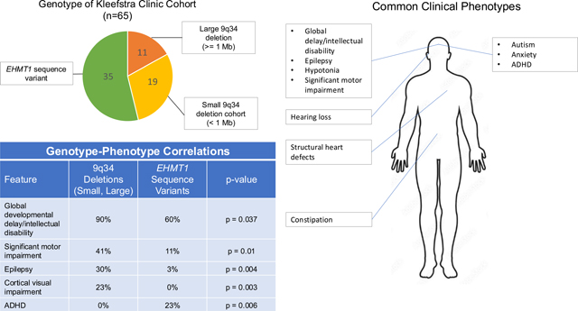
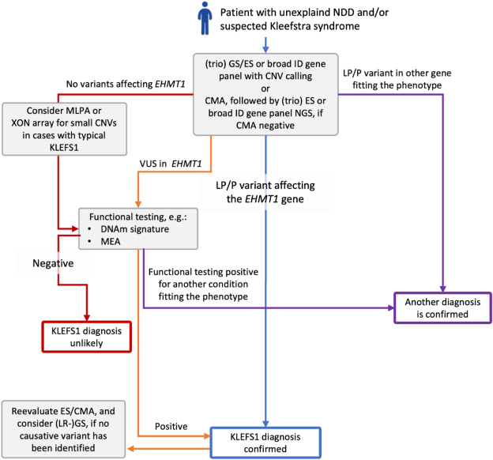

从首次报道到国际诊疗指南发布，科学家与临床团队不断深化对 Kleefstra 综合征的认识，为诊断、随访与治疗干预奠定基础。
Kleefstra 综合征（Kleefstra Syndrome, KS）又称为 9q 亚端粒缺失综合征，是一种由染色体 9q 亚端粒 34.3 区段缺失导致的罕见遗传综合征，1999 年由 Knight 等首次报道。随后，Tjitske Kleefstra 教授发现该区域 EHMT1 基因（常染色质组蛋白甲基转移酶 1 基因）的变异才是导致该综合征的根本原因，并在 2010 年正式提出 Kleefstra 综合征这一命名。
Knight 等人首次报道了 9q 亚端粒缺失综合征，描述了染色体 9q 末端区段缺失导致的一系列临床特征。
Tjitske Kleefstra 教授发现该区域的 EHMT1 基因（常染色质组蛋白甲基转移酶 1 基因）的变异才是导致该综合征的根本原因。
Kleefstra 教授正式提出 Kleefstra 综合征这一命名，统一了国际上对该疾病的称呼，推动了后续研究的标准化。
EHMT1 基因为 9q34.3 区域内明确的单倍剂量敏感基因（Haploinsufficiency Score = 3，ISCA-26439），其功能缺失即可致病。
EHMT1 基因编码组蛋白甲基转移酶，该酶可特异性催化组蛋白 H3 第 9 位赖氨酸的单甲基化、二甲基化与三甲基化，分别形成 H3K9me1、H3K9me2、H3K9me3（相当于给 H3 的 K9 位置打上标签，称为 H3K9 甲基化修饰）。
H3K9 甲基化修饰作为表观遗传标记，可招募异染色质蛋白 HP1 结合甲基化组蛋白，进而介导转录抑制——即让基因“关上、少转录、沉默”，使其表达量降低。[1]
该酶亦可弱催化组蛋白 H3 第 27 位赖氨酸甲基化（H3K27me）。
该酶还可甲基化修饰非组蛋白：介导 p53/TP53 第 373 位赖氨酸的二甲基化修饰。[2]
Kleefstra 综合征为罕见神经发育综合征，可累及全身多系统，患者个体间差异（异质性）显著。
短（小）头畸形、前额宽大、连眉、面中部发育不良、短鼻、鼻孔前翻、唇形异常；可合并诞生牙、乳牙滞留等牙体发育异常。
多表现为中重度智力障碍，少数为轻度发育迟缓，极个别智商正常但合并孤独症谱系障碍；普遍存在严重表达性语言落后、理解功能相对保留，多需借助辅助方式沟通。
幼儿期常出现孤独症样表现、刻板行为及轻度自伤；以夜间易醒、早醒、日间清醒过多为主要睡眠特征。青少年及青年期睡眠异常可预示神经发育倒退及精神异常，部分大龄患者可出现淡漠、类紧张症行为。
婴幼儿期肌张力低下，可致运动发育迟缓，但多数患儿 2～3 岁可独立行走。
常伴幼年远视，可合并传导性或感音神经性听力损伤。
心脏受累高发，约 50% 患者存在先天性心脏病。
10%～30% 患者存在膀胱输尿管反流、肾积水、肾囊肿及肾功能异常等泌尿系统畸形；30% 男性患者合并尿道下裂、隐睾、小阴茎等生殖器畸形。
约 30% 患者伴发癫痫，可见强直-阵挛、失神及复杂部分性发作。
可合并马蹄内翻足、上腹疝、气管支气管软化、胃食管反流等异常。
注：目前本病预期寿命尚不明确。
近年来，国际协作研究不断深化对本病的认识，并推动临床随访管理的规范化。
Kleefstra 教授联合波士顿儿童医院在期刊 Clin Genet 上发布了 65 例患者的队列研究：
该研究结果可优化本病临床随访管理，并为后续机制研究与治疗干预提供依据。

Tjitske Kleefstra 教授领衔，由 15 国专家及患者代表组成国际协作组，共同制定了 Kleefstra 综合征 1 型的国际诊疗指南，并发表于 Genetics in Medicine 期刊。
基于本指南，结合本社群现状，我们已将其整理成册，作为 V2 科普手册发放至家长手中。

团队成员来自三甲医院临床与专职科研骨干，长期从事遗传病诊断、神经发育障碍基础与临床研究等工作，希望通过专业积累，为 Kleefstra 综合征患儿家庭提供切实帮助。
长期以来，国内该罕见病患儿家庭缺少稳定、正规的交流渠道，很多家长在孩子喂养、发育、多种并发症管理、康复干预等问题上独自摸索，难以获取同龄患儿真实的成长经历与照护经验。基于此，我们利用自身的专业优势，搭建了多学科团队，成员覆盖儿内科、儿保科、儿童神经内科、遗传科、产前诊断科及青年科研人员，成立了 Kleefstra 综合征社群，希望能收到关于孩子们的更多反馈。希望我们共同努力，为这些孩子提供更多的专业帮助及关爱。
我们诚挚邀请 Kleefstra 综合征患儿家庭参与信息登记，共同搭建合规的病友交流与互助平台。
如果您的孩子经基因检测确诊为 Kleefstra 综合征（9q34.3 微缺失 / EHMT1 致病变异），我们诚挚邀请您参与本次家属信息登记，加入 Kleefstra 综合征病友社群。